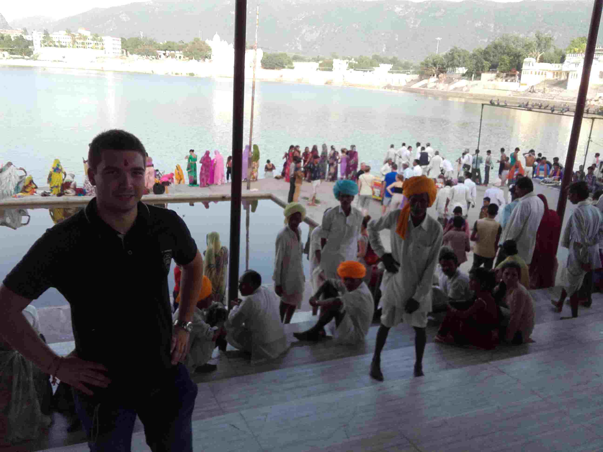
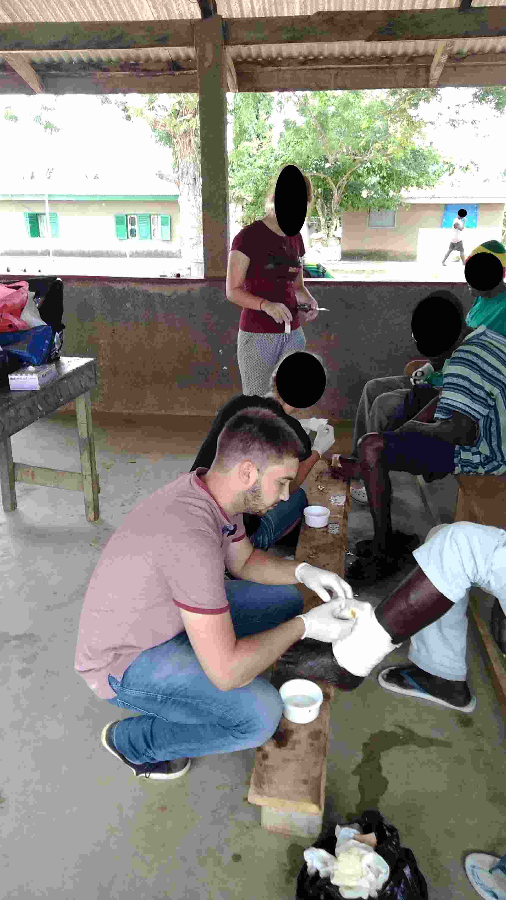
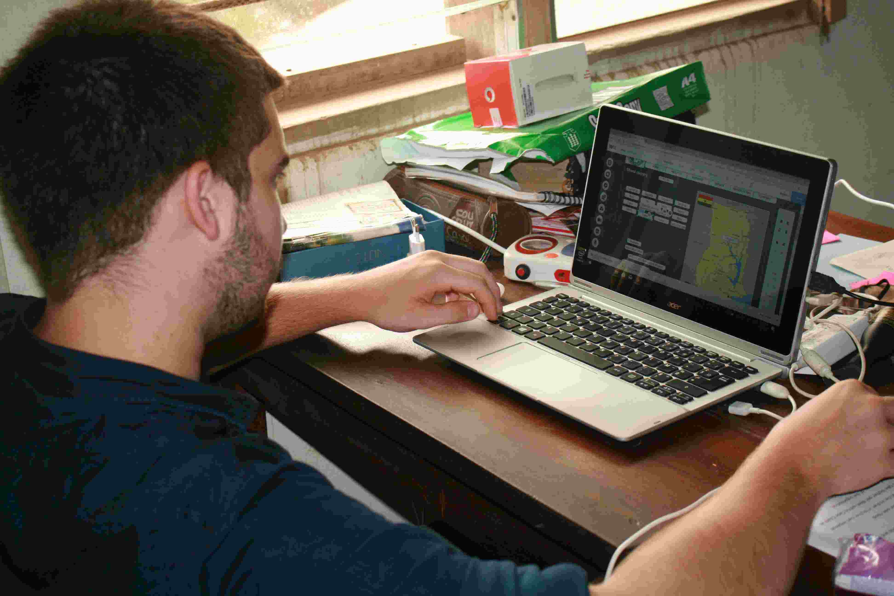

J'ai voyagé et vécu dans de nombreux pays notamment : l'Inde, les USA, le Ghana, la Pologne, l'Espagne, l'Allemagne, le Maroc et l'Angleterre.



J'ai voyagé et vécu dans de nombreux pays notamment : l'Inde, les USA, le Ghana, la Pologne, l'Espagne, l'Allemagne, le Maroc et l'Angleterre.
Le style de musique écouté : rock (Chuck Berry, Eric Clapton, ACDC), jazz (Aretha Franklin, Tammi Terrell), classique (Mozart, Bethoveen), rap (Orelsan, Lomepal, Nekfeu, 1995)
Actuellement, j'apprends la guitare électrique, je joue wonderwall du groupe Oasis. Mon prochain morceau en cours d'apprentissage est Hotel California des Eagles.
Je suis de près la culture cinématographique, notamment le tournant que souhaite prendre le 7ème Art en s'adaptant face au COVID. Le report de certains films, la décision de Warner de projeter leurs futurs films en salle et en SVOD via HBO max, ainsi que l'influence de Disney sur les prochaines réalisations.
J'attends avec impatience la fin du confinement pour intégrer une association d'amateurs.
À titre d'exemple, voici quelques films vus, que j'apprécie plus particulièrement :

• Appolo 11 (documentaire)
• Interstellar
• Les tontons flingueurs
• Réservoir Dogs
• La la land
• Le fondateur
• Douze hommes en colère